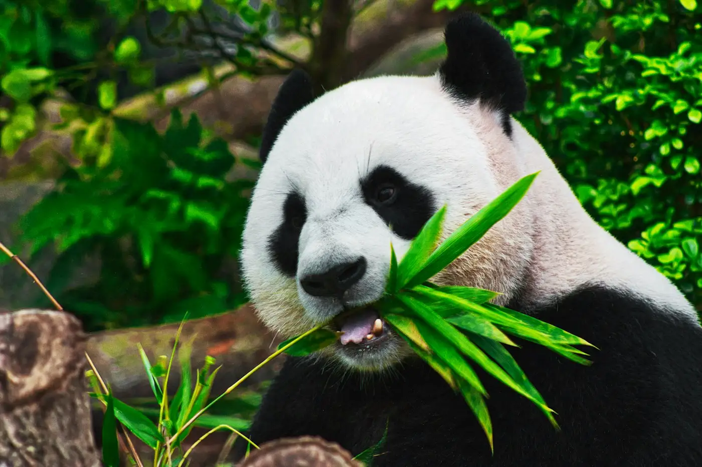
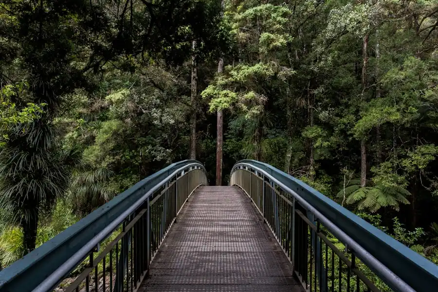
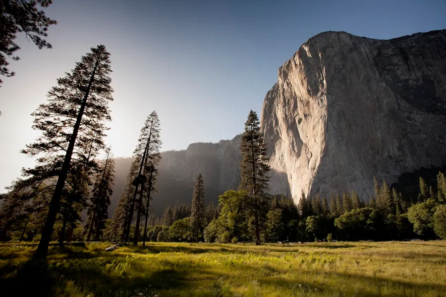
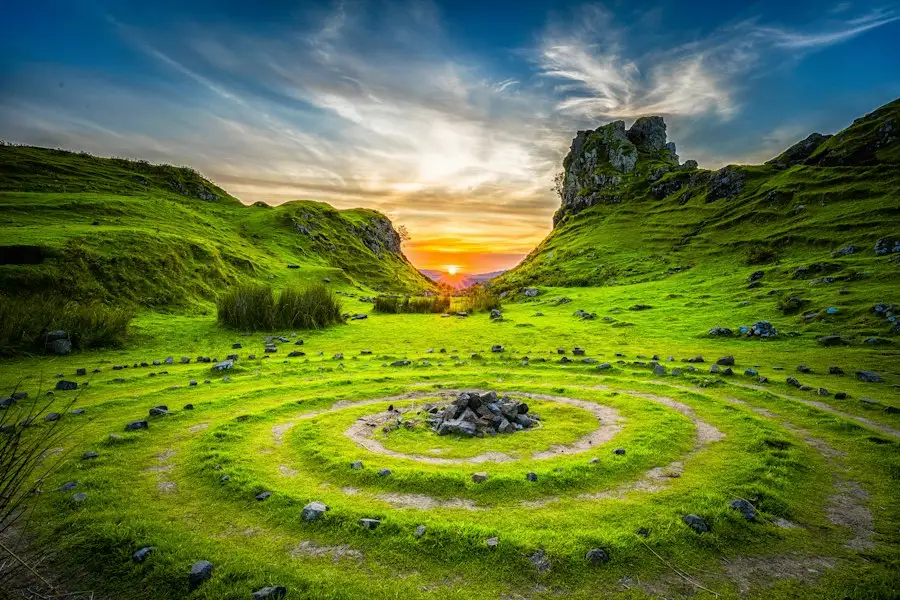
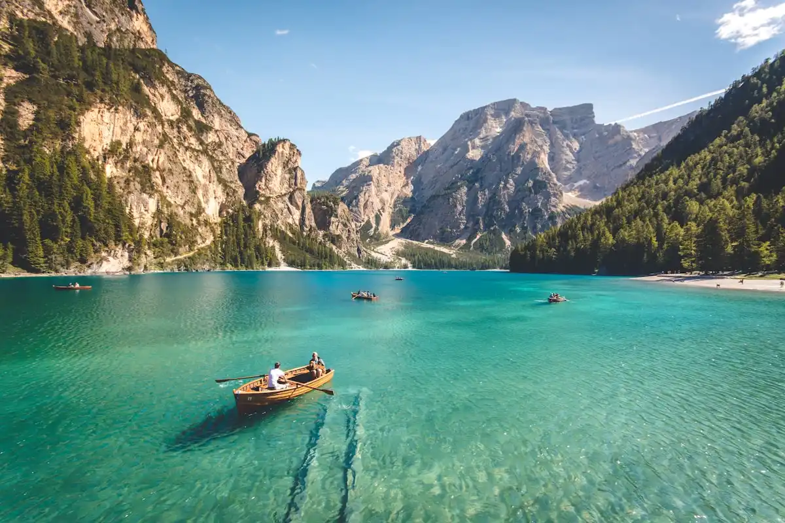
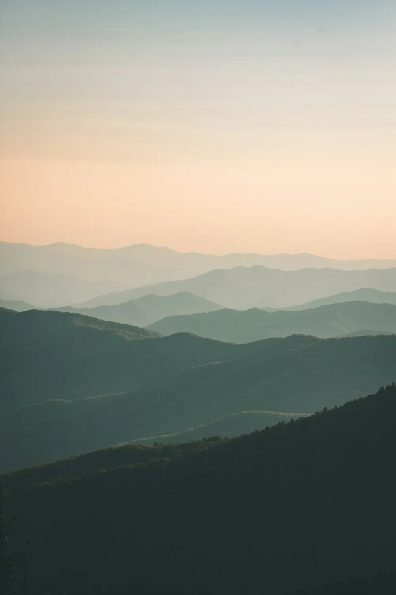
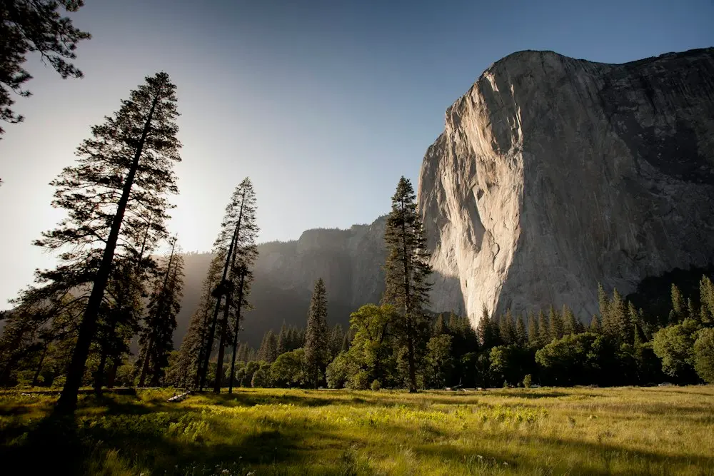

The Field Journal · Issue 07
Notes from the field,
written slowly.
Travel stories, wildlife notes, conservation briefings and responsible travel guidance — recorded on the ground, published when they're ready, not when a calendar says so.
Story of the Season
This season's long read
One story per issue, given the space it deserves — reported slowly, written without hurry.

What the forest remembers after the rain
Three weeks walking the same ridge at the end of the monsoon, watching how quickly a landscape resets itself — and what it doesn't reset.
From the Wild
Nature & wildlife stories
Animal sightings, forest notes and quiet observations — written by the people who spend their days watching.

Quiet mornings with the Kabini herd
Two weeks following the same family of elephants — and learning to read a forest by their pace.
Read story
The calls that tell you where you are
A short field guide to listening before looking.

What a river tells you about the season
Reading water level, clarity and flow before a paddle day.

Small things on a hill at dawn
Why the smallest life in a landscape is often the most telling.

The slow return of native flora
Documenting how a hillside recovers when human footfall is limited.
Responsible Travel Notes
How to travel better than you did last time
Practical notes on the small decisions — timing, packing, money, camera — that shape a place after you leave it.
-
01
6 min
Travel in the shoulder season
Fewer people on the trail, less pressure on water and waste systems, and quieter wildlife.
-
02
4 min
Pack less than you think
Every extra kilo is weight on a trail, in a boat, and on the person carrying it.
-
03
5 min
Spend where you stay
Buy from village shops, eat with host families, hire local guides. The multiplier is the point.
-
04
7 min
Put the camera down
Some places are not improved by being photographed. Learning when not to shoot is a skill.
-
05
3 min
Ask before you photograph people
A short, honest conversation is worth more than a good frame you didn't earn.
Destination Dispatches
Notes from specific places
Region-focused dispatches, written on the ground — the kind of detail that doesn't survive in a guidebook.

Monsoon, and the ridge that stays quiet
Why one stretch of ridge is best walked in August — and why almost nobody does.
Read dispatch
Grassland, shola, and what's between them
The seam where two ecosystems meet is usually the most interesting place to stand.

Following the water in a dry year
What happens to wildlife travel when the rains come late — and how to plan around it.

High altitude and slow acclimatization
Why rushing the ascent deprives you of the landscape's most subtle details.
The architecture of cold climates
How traditional wood and stone houses regulate temperature without power.
Trails & Experiences
Adventure, written down properly
Practical guides for walks, paddles and multi-day journeys — the details that make the difference between a good trip and a hard one.
Guides for the Curious
Resources for planning properly
Things worth reading before you book anything — brief, practical, and written for people who'd rather understand a place than tick it off.
South India — a seasonal map
When each region is at its best, and when it's best left alone.
Open guide Responsible travelA pack list that leaves nothing behind
What to bring, what to leave, and what to carry back out with you.
Open guide WildlifeBirding without a checklist
How to watch birds in a way that leaves the forest undisturbed.
Open guide TerrainReading hill country on foot
Slope, drainage, shade and weather — a short primer for walkers.
Open guideJournal Archive
Everything, in order
A full index of journal entries. Use it to browse by theme, region or date.
- Aug 2026 Long Read What the forest remembers after the rain 14 min
- Jul 2026 Wildlife Quiet mornings with the Kabini herd 9 min
- Jul 2026 Notes Travel in the shoulder season 6 min
- Jun 2026 Dispatch Monsoon, and the ridge that stays quiet 8 min
- Jun 2026 Field Guide How to plan a four-day ridge walk 12 min
- May 2026 Briefing Why elephant corridors are a travel problem too 5 min
- Apr 2026 Voices On slowing down, from the people who guide 7 min
Keep Exploring
One story,
once a season.
We send the journal as a seasonal letter — no marketing, no daily noise. Just the field notes and one long read.